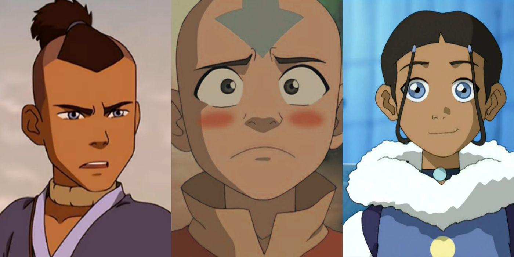

Topo do site
Avatar: The Last Airbender

Livro Um: Água.
Enquanto pescavam, os irmãos Sokka e Katara, da Tribo da Água, encontram um jovem chamado Aang e seu
bisonte voador presos a um iceberg. Após libertarem Aang do gelo, descobrem que ele é um dobrador de
ar, supostamente o último sobrevivente dos Nômades do Ar, que foram extintos há 100 anos durante a
destruição causada pelo Senhor do Fogo. Aang revela ser o Avatar, o único com o poder de dobrar
todos os quatro elementos.
Na Nação do Fogo, o príncipe Zuko acredita que o Avatar pode retornar e ameaçar a vitória de sua
nação. Determinado a capturá-lo para restaurar sua honra e ganhar o respeito de seu pai, o Senhor do
Fogo, Zuko inicia uma busca incansável por Aang. Enquanto isso, Katara e Sokka decidem ajudar Aang a
desenvolver suas habilidades de dobrador de água, levando-o em uma jornada até o Polo Norte para
encontrar um mestre que o instrua.
Zuko é um jovem atormentado pela morte de sua mãe e pela rejeição de seu pai. No entanto, seu tio
Iroh ainda vê o potencial de bondade em Zuko e decide acompanhá-lo na busca por Aang, com a
esperança de redimi-lo e guiá-lo para um caminho melhor. Durante a viagem, Aang, Katara e Sokka
fazem novos amigos, encontram aliados e ajudam comunidades a resistir à opressão da Nação do Fogo.
Em uma ocasião crucial, Aang recebe uma mensagem do Avatar Roku, do mundo espiritual, alertando-o
sobre o retorno do cometa Sozin, que concederá poder extra aos dobradores de fogo, aumentando a
ameaça da Nação do Fogo na guerra. Aang percebe que precisa dominar os quatro elementos antes da
chegada do cometa.
O grupo enfrenta diversos desafios durante suas viagens, e em certo momento, Aang encontra um mestre
do fogo disposto a treiná-lo. No entanto, um acidente durante o treinamento leva Aang a abandonar a
prática do fogo, prometendo nunca mais utilizá-lo.
Finalmente, o grupo chega à Tribo da Água do Norte, onde Katara e Aang podem aprimorar suas
habilidades de dobra de água. No entanto, encontram obstáculos, incluindo a atitude sexista de um
dos mestres locais, que se recusa a ensinar Katara por ela ser uma mulher. Além disso, a Nação do
Fogo ataca a Tribo, e Zuko captura Aang enquanto ele está no estado de Avatar. Aang precisa
enfrentar a situação e salvar a cidade dos soldados da Nação do Fogo.